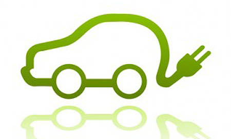

Rethinking Electric Cars: Are They Actually Good For the Environment?
03 July 2016Over the past decade more and more electric cars are being seen on the road. Advertisements and news articles give most people the general notion that electric cars are saving the environment, claiming that they have "zero-emission". But after doing a fair amount of research on electric cars, the question arises, are electric cars doing more harm than help to the environment? First, let's take a step back and understand how gasoline cars work.

Electric Cars and Toxic Waste. Figures borrowed from TeslaSportsCars and Ehow, respectively.
How Gasline Cars Work and Their Emissions
Gasoline cars use a process known as internal combustion in which the car's engine creates small controlled explosions where the gasoline undergoes combustion reactions and allows a piston to move back and forth rapidly. The piston's linear motion is then converted to rotational motion through a series of cams and gears until it finally powers the car's wheels. When we talk about emission, we refer to the products of the combusion reaction that are released from the car into the atmosphere through the exhaust pipe. The perfect combustion reaction of gasoline is as follows:
Where is Octane
One of the products of perfect combustion, Carbon Dioxide, , is a greenhouse gas, which causes global warming. However, Carbon Dioxide is only one of the harmful byproducts of the combustion reaction, most combusion reactions that occur in a car are not "perfect" because they often do not have enough oxygen entering the combustion chamber which results in the release of Carbon Monoxide, , which is an odorless and colorless gas that binds to the hemoglobin in your red blood cells when accidentally inhaled. Since hemoglobin binds to Carbon Monoxide over Oxygen, the amount of oxygen that your blood carries to your cells decreases and can kill you. In addition, since the atmosphere is composted of Nitrogen, one of the main byproducts of combustion are Nitrogen Oxides, . Nitrogen Oxides react with oxygen to form Ozone, which is a lung irritant that can damage the respiratory system. Nitrogen Oxides also react with atmospheric moisture to acidify it causing acid rain which is harmful to the environment. Sulphur Dioxide, , is a byproduct of combustion in diesel and petrol engines which can aggreviate asthma conditions and can form acid raid. Another byproduct of combustion is Benzene, , which is a carcinogenic substance. Another greenhouse gas, Methane, is emitted by the combustion of gasoline. I could go on and on with this list for the next two hours, but don't worry I'll stop here.
{kind=link}
National Emissions Graph From 0 to 2000. Figure borrowed from US Environmental Protection Agency.
Now let's talk a little about how electric cars work and then move on to answering our big question: Are electric cars better or worse for the environment compared to gasoline cars?
How Electric Cars Work and Their Emissions
Electric cars, unlike gasoline cars do not have an engine, instead they have a motor that runs on electricity. Now, you might be thinking, if an electric car doesn't have an engine, the combustion reaction is eliminated so there is zero-emission. And that's true if we're only talking about the car. Let's take a step back and see how the car is actually powered. The motor is powered through a battery pack located in the car and the battery pack is charged by plugging it in to a charger on the wall. However if you really think about it, the electricity that comes out of your power outlet to charge the battery comes from a power plant. Power plants make electricity by burning fossil fuels that release similar byproducts to what can be found in the emissions of a gasoline car. If you look at the whole story, electric cars are not actually zero-emission. In addition, the average battery life for an electric car is around ten years. Although there are some new initiatives to recycle and reuse batteries, most batteries are sent to toxic waste landfills where they stay for millions of years. With more people turning to electric cars, one challenge will be creating new toxic waste landfills that are in a safe area so leaked toxins from the batteries do not pollute the ground water. Since batteries are highly flamable, they must be maintained carefully to avoid fires that can release harmful chemicals from the batteries into the atmosphere. Now that we understand how electric cars work let's move on to analyze which car is actually better for the environment.
Quantitative Comparison Between Electric Cars and Gasoline Cars
Since is the main byproduct of the combustion of gasoline, I am only going to measure the amount of released into the atmosphere by gasoline cars and electric cars for this analysis.
My calculations for the table below is based on the following information that I found online:
- On average, the combustion of one gallon of gasonline releases about eighteen pounds of into the atmosphere.
- A gasoline car or light-weight truck in the United States travels an average of miles per gallon.
- A nissan leaf (electric car) uses kilowatt hours (kWh) to travel miles.
- The heat rate of coal (anthracite and bituminous) is
- The heat rate of natural gas is
- The heat rate of distilate oil (No.2) is
- The heat rate of residual oil (No.6) is
- The pounds of released when coal (anthracite) is burned can be given by
- The pounds of released when coal (bituminous) is burned can be given by
- The pounds of released when natural gas is burned can be given by
- The pounds of released when distilate oil (No.2) is burned can be given by
- The pounds of released when residual oil (No.6) is burned can be given by
- All calculations were made for the car travelling miles
{kind=link}
Amount of carbon dioxide released from a gas car travelling 100 miles. Figure borrowed from clipartkid. Numbers calculated by me.
{kind=link}
Various amounts of carbon dioxide released from an electric car travelling 100 miles and being charged from the power generated by differnet types of power plants. Figure borrowed from clipartkid. Numbers calculated by me.
| Car | Coal (Anthracite) Lb. Released | Coal (Bituminous) Lb. Released |
| Electric (Nissan Leaf) | ||
| Gasoline |
| Car | Natural Gas Lb. Released |
| Electric (Nissan Leaf) | |
| Gasoline |
| Car | Distilate Oil (No.2) Lb. Released | Residual Oil (No.6) Lb. Released |
| Electric (Nissan Leaf) | ||
| Gasoline |
The numbers in the table above were calculated based on the figures that I listed above the table in the beginning of this section. Note: The most commonly used coal in power plants across the United States is a grade between anthracite and bituminous. Reminder: All calculations were based on the cars traveling 100 miles.
Conclusion
From the table above, you can see that electric cars produce more than a gasoline car when they are charged from the power generated in a coal (anthracite) power plant. In all other types of power plants, the electric car produces less than the gasoline car. However, coal (anthracite) is the most common type of power plant in the United States, producing of the power generated in the United States. In addition, the challenge of disposing the batteries of electric cars has still not been tackled. Electric cars are becoming a growing industry in the United States. I look forward to researching new sources renewable of energy and creating batteries that are more environmentally friendly. If you are interested in my thoughts on electric cars or have questions regarding my calculations, feel free to email me!